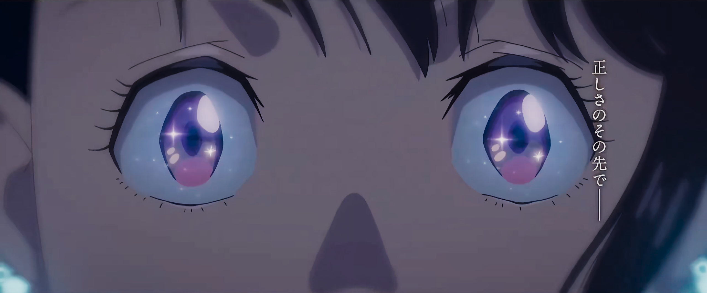

铃芽之旅
门的另一边，有着所有的时间——
铃芽是一位生活在九州的一个宁静小镇上的17岁少女，某天她遇到了“正在找门”的旅行青年草太。跟随着他的脚步，铃芽来到了山上的废墟之地，她发现有一扇古老的门孤零零地伫立在那。铃芽仿佛被什么吸引了一般，将手伸向了那扇门……
据说，灾祸将会从门的那一边降临于现世，所以草太作为将门锁上的“闭门师”在各地旅行。
“铃芽，我喜欢”“至于你，碍事”
大臣话音刚落，草太竟然变成了椅子！而且那是铃芽小时候用过的缺了一条腿的椅子。为了抓住大臣，草太以三条腿椅子的样子跑了出去，铃芽也慌忙地跟了上去。
不久之后，日本各地的门开始一扇接一扇地打开。在不可思议的门和小猫的引导下，铃芽在九州、四国、关西，还有东京及日本列岛开始了“关门之旅”。途中铃芽得到了很多帮助，并且当她到达目的地时，她发现在那有一个被遗忘的真相.

灾难三部曲最终章
从《你的名字》到《铃芽之旅》；新海诚用10年的时间，终于完成了对灾难创伤的心理转变。《你的名字》试图改变未来；《天气之子》尝试选择人生，而到了《铃芽之旅》，新海诚终于明白了，也许面对灾难的最好方式，就是接受现实、重新开始珍贵的日常生活 。
一场充满治愈与勇气的冒险旅程
但对比起《你的名字》虚构的彗星坠落，《天气之子》虚构的大雨不停，《铃芽之旅》叙述的，是日本民众现实中会真实遭遇的地震，这让这部影片的现实色彩浓厚了许多，也被许多观众认为新海诚正在朝着更辽阔深远的社会议题进发。
新海诚写道，“我们通过娱乐接近死亡后，会庆幸自己活着，这是故事朴素而根本的作用，也是我们单纯而困难的工作。”铃芽家恰好位于震源地，4岁的她失去了唯一的至亲母亲，只好跟随28岁的年轻姨妈到九州生活。影片开始时，铃芽已经长大成一名高中女生。切身经历过灾难、失去过至亲的人们，怎样才能战胜时间难以冲淡的悲痛？在《铃芽之旅》海报的右上角，新海诚似乎想要通过这部影片告诉大家，我们是能够重新出发的。